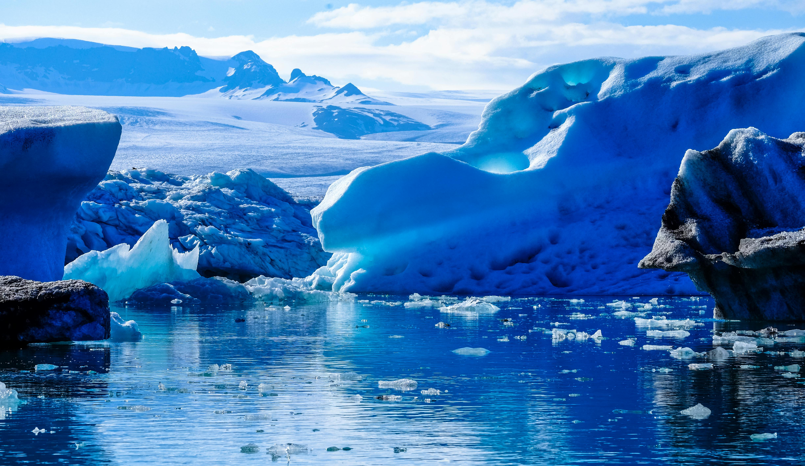

The Glaciers Are Melting!

Why are Glaciers Melting?
- Rising global temperatures cause ice to melt faster.
- Greenhouse gases trap heat in the atmosphere.
- Glaciers in Greenland and Antarctica are shrinking rapidly.
- Melting ice raises sea levels and disrupts ecosystems.
What happens when glaciers melt?
- Sea levels rise, flooding coastal cities and islands.
- Freshwater from melting ice disrupts ocean currents.
- Habitats for animals like polar bears and seals disappear.
- Communities that rely on glacier water face shortages.
- Global weather patterns become more unstable.